先介绍我是谁
数据科学家述职：用产品把数据变成钱
AI 能重写数字化的规则，我来 Lute 赌的就是这个：用产品把数据变成钱，而不是把数据变成报表。
我在 Lute 的角色定义
不是“数据支持”，而是把业务问题、数据资产、AI 工程和产品闭环压成可交付系统。
学历与轨迹
8 年跨 6 域，只做一件事：把技术变成可验证结果
学历底座
- 武汉理工大学本科：自动控制，工程系统与信号采集训练。
- 武汉大学双学位：计算机，算法与软件系统训练。
- SCI / IEEE 顶刊作者：自动驾驶方向，长期训练“问题建模→实验→可复现结论”。
| 年份 | 公司 | 角色 | 核心能力 |
|---|---|---|---|
| 2015 | TDK | 伺服系统工程师 | NI-Box 数字信号采集与分析 |
| 2017 | 妙思科技第一研究所 | 数据算法工程师 | BP 神经网络 / 智能仿生算法 |
| 2019 | PadBot | 机器人导航算法工程师 | 室内 SLAM 与路径规划 |
| 2021 | 明领基因 | 数据科学家 | 生物大数据 AI 算法商业化 |
| 2023 | Bestore | 流程数字化专家 / 数据算法专家 | 中后台数字化与内外部洞察 |
| 2025 | 老百姓大药房 | 商业分析专家 / 营销数字化部长 | 全渠道营销与营运业绩突击 |
| 2025 | Smoore | 销售运营高级经理 | toB AI + BI 产品驱动决策 |
| 2026 | Lute | 数据科学家 | 全域数字化研究与落地，自我革命 |
能力映射
岗位职责不是 JD 条款，而是产品矩阵的能力来源
| 能力域 | 岗位职责 | 在 Lute 的落地映射 |
|---|---|---|
| 全链路闭环 | 问题定义→数据提取→分析建模→洞察输出，为关键决策提供可靠支持 | 止血层：AuditScope 穿透流量到支付；造血层：VOA/VOC 从宏观洞察到产品落地 MVP |
| 建模与算法 | 回归、时间序列、机器学习，监测转化率、LTV，支撑推荐与精准营销 | pp1000 千人千面成交 Agent；AI 选品引擎聚合 Amazon 与 TikTok 数据 |
| 实验与度量 | A/B 测试、多触点归因、全链路漏斗，科学评估营销和产品迭代效益 | 独立站渠道归因；经营诊断 Agent 做业务归因穿透 |
| 产品化落地 | 协同产品/研发，模型部署与效果复盘，推动分析系统化 | 三层验收标准；路特星链把分析能力蒸馏为可复用 Skill |
| 技术栈资质 | SQL、Python/R、统计建模、GA/Shopify、完整落地经验 | 8 年跨域 + 顶刊作者 + 商业 AI 产品化，支撑 Part 2 所有产品落地 |
30 分钟目录
叙事弧线：从赌 AI 窗口，到权钱责杠杆
Part 1
我为什么来：数字化不是报表，是把数据变成钱
1-2 分钟：开场钩子 + 岗位认知
开场钩子
我来 Lute 赌的是 AI 进入真钱场景的窗口
我的职责是把数据变现，产生业务货币。冒昧问一句：在座各位，谁通过 AI 做产品挣到过商单？真金白银的那种。
如果没有，请耐心听我讲我是怎么做的；如果觉得 AI 是人工智障，麻烦用用付费 AI，先搞明白它真正的能力边界。
第一性原理拆解
- 数字化的目标不是“有系统”，而是业务结果可被数据驱动、被产品承接。
- AI 的价值不是会聊天，而是替代原来由人完成的判断、生成、归因和执行。
- 产品的完成不是页面上线，而是通过三关：数据真不真、决策替没替人、钱有没有回来。
数字化认知
大多数人看到“术”，我押注“道”
字面层：术
纸质变电子、手工变系统、线下变线上；追求更快、更省、更准。
深层：道
数据开始预测、决策、发现业务；企业从封闭堡垒变成信息高速流转的生命体。
| 跃迁 | 从 | 到 |
|---|---|---|
| 数据驱动 | 死档案，记录发生了什么 | 新油田，预测、决策、发现新业务 |
| 全域连接 | 部门各自为政，封闭堡垒 | 内外实时协同，信息高速流转 |
| 体验重构 | 线下流程搬线上 | 围绕客户价值重做体验 |
| 智能涌现 | 机器替人做固定活 | 系统从数据里长出感知、学习、判断 |
| 模式再造 | 卖产品，一次买卖 | 卖服务，持续共生 |
Part 2
我做了什么：三层 37 子产品，四根支柱
主体：从止血到造血，再到机制沉淀
矩阵总览
ABI Agent 不是一组零散页面，是一套“把数据变钱”的产品矩阵
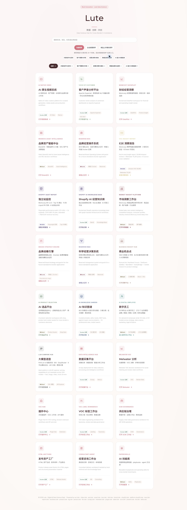
产品矩阵全景图
24 个系统从外部信号到 AI 知识沉淀，形成经营闭环
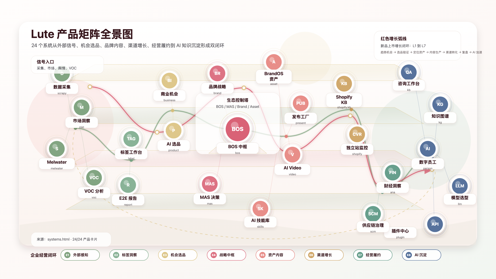
三层 37 子产品
止血让问题见光，造血让产品替人，机制让能力复制
止血层：让问题见光
ana_caijing 业财一体化诊断；lute-momcozy-audit 独立站 SEO + 营收审计；ecom_ana_overview 数据洞察全主题；data_agent_plus；BI 指标体系。
造血层：产品替代人工
ai_nlp_voc、plugin_hub、melwater、Brand_agent；ABI 独立站、pp1000、ai_product_select、mkt53、business_insight_hub、AI 视频、SCM、VOA/BOS、data_scrapy、AI 数字员工。
机制层：组织不依赖个人
lute_skills_starlink、paper_to_skills、hermes-skills、skills_graph；ai_pm_library、platform wiki、MAS、多智能体工作台、PromptForge、模型选型、Codex 自进化、HTML 资产工厂。
| 层 | 代表产品 | 钱的方向 |
|---|---|---|
| 止血 | AuditScope / DataPilot / 数字化中心 CT / SCM 口径治理 | 堵住归因、结账、库存、折扣、长尾 SKU、组织失明造成的亏损 |
| 造血 | VOC / ABI / BrandOS / VOA / Product Selection / DataHub | 把用户声音、经营知识、外部市场情报变成增长动作 |
| 机制 | Starlink / Paper2Skills / PromptForge / MAS | 把一次性能力变成可路由、可执行、可审计、可复制的资产 |
年度规划
四个季度专题：洞察发现机会，闭环驱动动作，产品矩阵支撑落地
| 季度 | 专题 | 核心指标 | 对应产品 | 闭环 |
|---|---|---|---|---|
| Q2 | 全域 VOC 数据洞察 | 复购率 / NPS / LTV / 大单品商机 / 广告 ROI | ai_nlp_voc / melwater / plugin_hub / Brand_agent / mkt53 / VOA | 消费者→客服→质量→企划→研发→用户→AI→IPMS |
| Q1-Q2 | 线上订单数量与质量提升 | 仓网 / 库存周转 / 订单耗时 / 品类优化 / 退款数 | ecom_ana_overview / SCM / data_agent_plus / ana_caijing / AuditScope | 用户→服务→产品→业财一体化 |
| Q3 | 分国家渠道运营健康度 | 产品适配 / 营销推广 / 仓网布局 / 风险预警 | ABI 独立站 / pp1000 / mkt53 / AuditScope / ana_caijing | 渠道画像→产品适配→营销推广→仓网布局 |
| Q4 | 营销项目类型 ROI 量化 | LTV / 费效比 / ROAS / 促销 ROI / 转化率 | pp1000 / business_insight_hub / ana_caijing / ABI / VOA/VOC | 曝光→浏览→下单→加购→复购→裂变→第二大单品 |
Q1 产出
试用期 A 绩效的核心不是“做了很多”，而是每项都指向经营结果
| Q1 核心产出 | 价值指向 | 沉淀资产 |
|---|---|---|
| 毛利率提升专题洞察报告 | 品线组合→促销手法→营销定价三环节，直指独立站毛利率提升 | FP-Growth 选品池、单品促销定价工具、组合促销 SOP |
| 供应链成本效率整合洞察报告 | 八节点诊断，发现采购端吞噬物流优化 64.3% 的核心矛盾 | 30/60/90/180 天治理方案与数据产品路线图 |
| 年度四季度洞察专题规划 | 全域 VOC→订单质量→国家渠道→营销 ROI，14 个子课题锚定核心指标 | 每个子课题匹配对应产品 |
| 全量数仓底表盘点 | 理清数据资产家底，为数据采集与指标体系提供底座 | 专题洞察所需底表清单 |
| 星图各业务域指标体系 | 覆盖营销、供应链、用户、渠道、财务 | 统一指标口径与 BI 标准化基础 |
端到端能力产品
ABI 独立站；VOA/VOC 第二增长曲线报告。证明数据可以从原材料走到可执行结果。
直驱一线产品
pp1000；ai_nlp_voc + plugin_hub。跳过数据部门到业务方的传递链条。
长期主义产品
multi_agent_system；lute_skills_starlink。目标是我离开后，Lute AI 能力不降反升。
Part 2 · 支柱一
止血：内外双透明，把亏钱的口子暴露出来
对外独立站，对内 DataPilot 与组织 CT
独立站 360 审计
对外止血：Momcozy 独立站 8 个系统性问题审计
| 问题 | 关键事实 | 月化损失 / 影响 |
|---|---|---|
| 归因失灵 | FB Pixel 双重计数，ROAS 虚高约 2x；自然搜索归因缺失、新访客识别失灵、Bot 未量化 | 每月 $53 万广告费无法正确归因 |
| 结账底部出血 | 结账→购买仅 38.2%，行业均值 60%；sticky-atc 在 viewport 外 5px，快捷支付未启用 | $72,074-$86,000 |
| 漏斗前端失血 | 91.4% 访客未加购，加购率 8.6%；PDP 信任信号不在首屏 | $22,848 |
| JS 技术负担 | 第三方脚本失败 92 次/PDP；DOM 11,742；JS 总载荷 2,212KB | P1/P2 损失放大器 |
| SEO/GEO 盲区 | 爬虫预算浪费 40-60%；0/5 AI 推荐获 best overall | 美国广告率降至 EU 水平可月省 $131 万，属潜在项 |
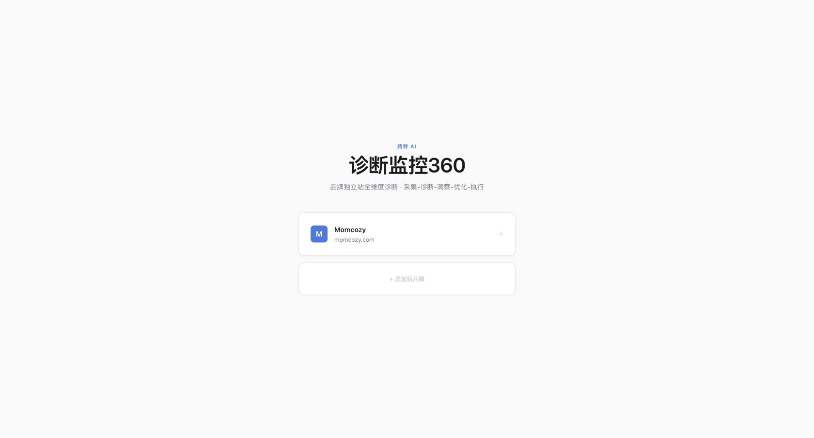
立即行动清单
止血价值不是发现问题，而是把每个问题绑定动作、金额和优先级
数字化中心 CT
对内止血：1,194 条周报 × 16 周 × 127 人全量审计
| 问题 | 关键数据 | 严重度 | 本质 |
|---|---|---|---|
| 管理层系统性失明 | 周报已读率中位数 14.3%，重组后不升反降 | P1 | 管理层无法感知项目真实状态 |
| 组织批量但产出未同步 | 人数 +21.3%，周均周报仅 +1.0%；35 组中 12 个一人组 | P2 | 组织扩张没有转成产出增长 |
| AI 基础设施近乎真空 | GPU/CUDA/MLOps/微调/Fine-tune 命中为 0；Agent/MCP/工具调用信号为 0 | P3 | AI 标签多，工程深度少 |
| 项目无终止机制 | 31 个主要项目，正式终止数 = 0；2 个僵尸项目 16 周无递进 | P4 | 组织没有停止做错事的机制 |
| AI 部门标签化包装 | 交付保障组、智能办公组零 AI 工程信号 | P5 | 传统系统集成被包装为 AI |
DataPilot
对内止血 + 造血：122 万行全渠道数据穿透经营真相
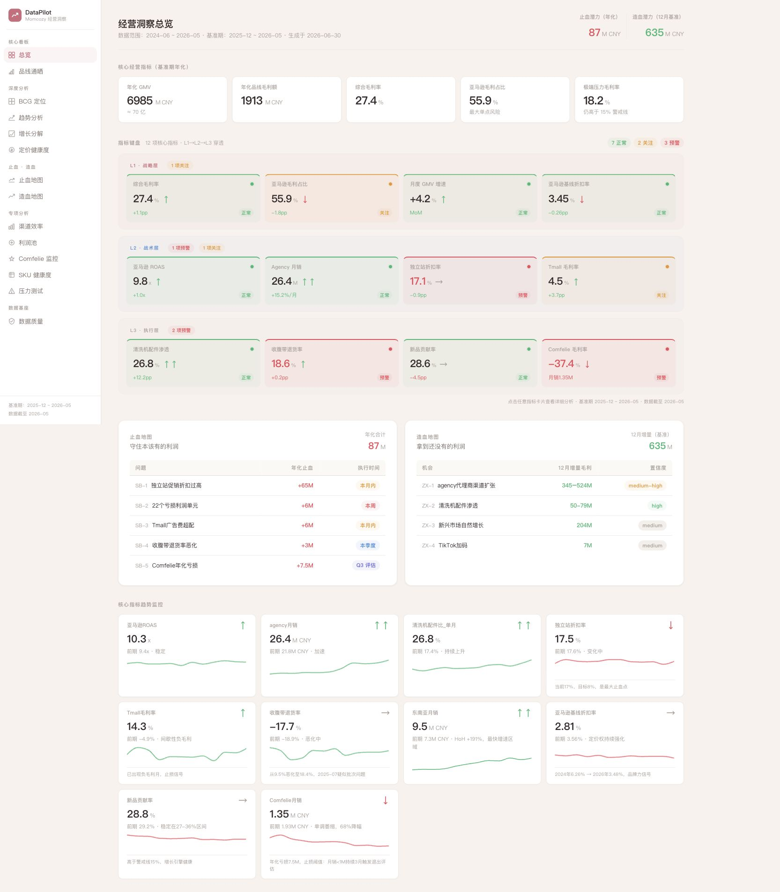
| 发现 | 关键数据 | 年化影响 |
|---|---|---|
| 线下 agency 是增长引擎 | 月增速 15.2%，61% 毛利率，零广告费，7.3 倍增速 | 12 月造血增量 635M CNY（基准） |
| 独立站毛利率长期偏低 | 广告 17.6% + 折扣 17.1% + GTM 3.98% + 仓配 7% + 手续费 3.2% | 折扣 17%→8%，止血 65M CNY |
| 764 个 B 类亏损长尾 SKU | SKU +72%，1.6% SKU 贡献 50% GMV；B 类年化亏损 18.1M | 五个止血点合计 87M |
| 渠道效率前沿线差 17 倍 | worten ROAS 62.5x vs Tmall 3.5x；Tmall 广告费率 28.5% | 释放 50M 转投 agency BD |
| Amazon 集中度 64% | Amazon -20% 年化损失 221M；最极端毛利率仍 18.2% | 建立 Q3 agency BD 对冲方案 |
支柱一结论
数字化最大价值不是建系统，是让藏污纳垢的地方见光
Part 2 · 支柱二
造血·守：700 万 VOC 变成增长决策资产
从用户声音到机会、风险、标签、看板、治理
VOC 数据底座
把跨平台消费者声音，统一成可追溯、可打标、可消费的决策资产
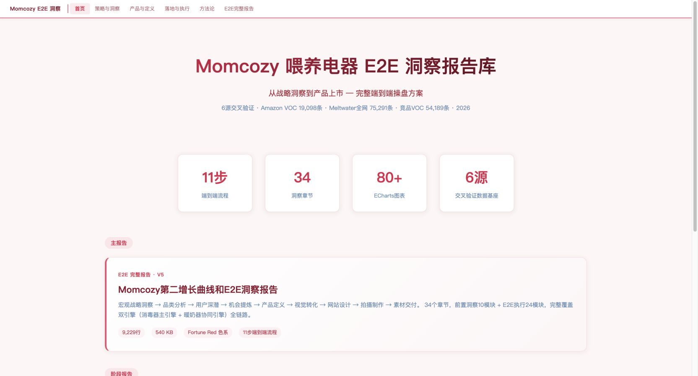
VOC 七条价值链
700 万条 VOC 不再是负担，是护城河
| 方向 | 解决的核心问题 | 对应经营价值 |
|---|---|---|
| 选品机会识别 | VOC × SPU × ASIN × 销售表现 | 选品从看销量升级为看真实痛点缺口 |
| 广告 ROI 优化 | 标签情绪 × AIPL × 渠道平台 | 判断 ROI 下滑是素材、产品还是履约问题 |
| 海外履约诊断 | 物流 / 破损 / 延迟 / 客服标签归因 | 履约问题量化到国家、平台、仓配链路 |
| 本地化营销洞察 | 国家 / 语言 / 平台 / persona 标签 | 同一卖点在不同市场表现差异可解释 |
| 合规与风险预警 | 负面 / 投诉 / 舆情标签 | 产品安全和宣传风险前置发现 |
| 评论运营与口碑增长 | 高价值 UGC 识别与放大 | 把评论转成可引用的转化资产 |
| 全球市场本地化策略 | 跨国家 / 跨平台故事线沉淀 | 局部经验变公司级增长资产 |
BrandOS 旁证
品牌资产智能中台：10 品牌 × 315 SKU × 68 维 × 8-Agent
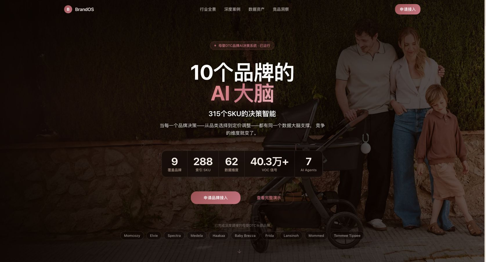
| 能力 | 本质价值 |
|---|---|
| 跨品牌多维数据湖 | 把一个团队 3 个月才能摸清的市场全貌，压缩成可机器读取的行业知识图谱 |
| 四层 VOC 解析 | 发现 Amazon 看不见、社交上正在积累的沉默风险 |
| Brand Token | 品牌规范从 PDF 变成可被 AI 调用的护栏 |
| 四层穿透决策 | CEO 看战略，CMO 看策略，运营看今日动作 |
Part 2 · 支柱三
造血·攻：ABI 智能化独立站
把跨境 DTC 知识压成可检索、可执行、可审计、可复制的经营操作系统
ABI 作战台
不是 Shopify 知识库，而是 AI 经营操作系统
| 能力 | 证据 | 解决什么 |
|---|---|---|
| 全链路知识底座 | 128 篇 Markdown，14 个全流程/横切节点 | 经验碎片化、人员依赖、流程不可复制 |
| RAG + KG 检索 | 688 chunks + 260 实体 / 785 关系；RAG 5/5 | 资料找不到，找到也连不上动作 |
| 经营作战台 | Command Center / Journey / 技术 / SOP / Agent / 风控 / 证据 / 配置 | AI 能力如何转成经营动作 |
| 人审闸 | T7 测试店优先，mutation preview，逐次审批，不保存 token/password | AI 自动化越权风险 |
| 部署分发 | 7 个 Claude Code skills + marketplace + deploy 脚本 | 从个人演示变团队资产 |
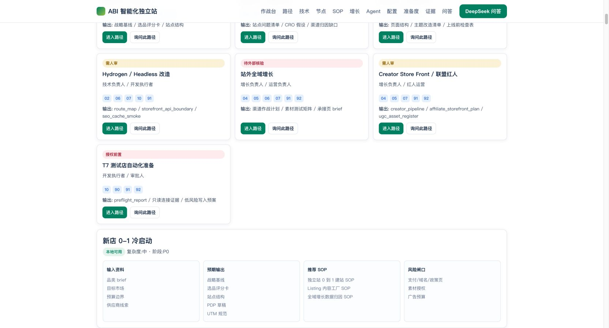
三层业务场景
ABI 直接回答：今天怎么做、怎么管得住、怎么复制
| 层级 | 解决的问题 | 典型场景 | 价值目标 |
|---|---|---|---|
| 微观·执行层 | 今天怎么做 | Accio 选品→数据桥→Listing 工厂→默认 draft 人审发布；广告诊断按 Placement/Search Term/UTM/库存/站外活动共同诊断 | 上架资料整理工时下降 30-50%，字段漏填率下降 50%+ |
| 中观·管理层 | 怎么管得住 | 旺季 T-90/T-60/T-30/T-7/T+30；KOL/UGC/Affiliate/Deal/CPC 统一前置材料、UTM、coupon、creator_id 和风控闸 | 项目从临时救火转成节奏管理 |
| 宏观·战略层 | 怎么规模化复制 | 新品牌/新市场复用战略基线→选品评分→Listing 工厂→渠道增长→归因→履约→VOC | SOP 复用率 60-80%，新人培训周期缩短 30%+ |
ABI 下一断点
从“知识产品”进入“可验证执行产品”
测试店闭环
创建 development store，完成只读连接、低风险测试商品写入、写后复查、回滚台账。关键是从建议系统进入可验证执行。
真实经营数据接入
接 Shopify Orders、GA4/GTM、广告报表、GSC、库存/WMS、客服/VOC 的脱敏样本或测试数据。
多品牌 / 多市场复制
把 SOP、技能、知识图谱、风险闸扩展到新品牌、新市场、新渠道，形成品牌出海 AI 经营基础设施。
Part 2 · 支柱四
建机制：我走了之后，Lute 的 AI 能力不降反升
Starlink 把业务动作变 Skill；Paper2Skills 把顶刊方法变决策资产
路特星链
业务问题直接进入可执行链路
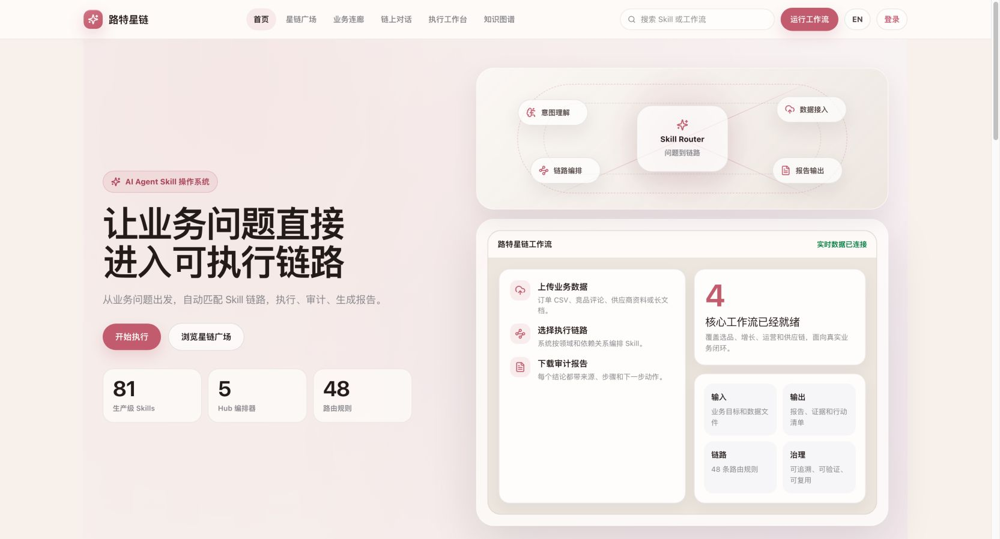
| 能力 | 本质 |
|---|---|
| 问题→Skill 路由 | 模糊业务问题变成可执行路径，不靠人脑临时拼流程 |
| 方法论资产化 | 专家经验沉淀为可复用能力，降低对单个运营专家依赖 |
| 执行闭环 | Workspace→CSV→workflow run→job→report/PDF |
| 生命周期治理 | creator/eval/opt/schema/doctor/sync 让 AI 能力可发布可优化 |
Paper2Skills
顶会论文不是知识收藏，是 1054 个可执行跨境决策技能
| 代表 Skill | 业务价值 | ROI 估值 |
|---|---|---|
| STATE | 鲁棒 A/B 方差减少，重尾指标下方差 -70% | 30-60 万元 |
| EventCast | LLM 事件感知预测，大促场景 MAE -57% | 100 万元 |
| Guardrailed Uplift | CATE + 业务护栏，减少无效留存成本 | 25-28 万元 |
| Supply Chain Causal SCM | 定位广告无效还是履约不好，结束部门甩锅 | 5-10 万元 |
| AnchorCrafter | 自动生成带货视频素材 | 50-100 万元 |
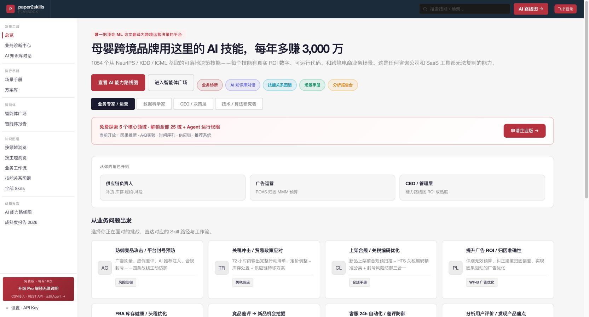
三层验收标准
锁死所有数字化产品的交付底线：三道关不过，不算完
数据真不真？
来源可追溯，口径可验证。没有证据链的结论不能进入经营决策。
决策替没替人？
产品有没有替代人工判断，而不是只帮人看得更快。
钱有没有回来？
省了多少、赚了多少，必须量化；不能量化就不能宣称完成。
个人商业化实践成果
按三层矩阵重组：风险审计、营收增长、效率工具、部门进阶
| 产出类型 | 代表产品 | 商业化含义 |
|---|---|---|
| 风险审计产品 | lute-momcozy-audit；ana_caijing；ecom_ana_overview；data_agent_plus | 把不可见亏损暴露为可修复动作，最短路径止血 |
| 营收增长产品 | ABI 独立站；pp1000；ai_product_select；mkt53；business_insight_hub；VOA/VOC；Brand_agent；AI_vedio | 从洞察、选品、开店、营销、内容到成交，把数据接到营收 |
| 效率工具产品 | ai_nlp_voc + plugin_hub + melwater；VOA/BOS；data_scrapy + data_achieve；AI 数字员工；SCM | 把采集、洞察、治理、执行从人工流程改成产品流程 |
| 部门能力进阶产品 | lute_skills_starlink；paper_to_skills；hermes-skills；skills_graph；MAS；Agent_agents；lute-ai-company-workspace；llm_models_hub；ai_pm_library；lute_bug | 把个人能力变组织能力，建立可持续自进化系统 |
Part 3
业务理解：数字化中心要从 L3 走向 L4/L5
资源不是不够，而是需要从维持运转转向创造增量
对数字化中心的理解
Lute 不缺数字化投入规模，缺的是平台化能力和 AI 工程深度
四化方向
部门要从支持型数字化，升级为经营型数字化
| 方向 | 目标 | 含义 | 产品抓手 |
|---|---|---|---|
| 集中化 | 全域数据科学管理 | 数据不再散落在各业务系统，统一收入数据科学中台 | DataHub / VOC / SCM / DataPilot |
| 标准化 | 看数分析标准统一 | 口径统一、指标统一、报告统一，一个人的分析其他部门也认 | 指标体系 / certified metrics / 三层验收 |
| 差异化 | 数据产品差异迭代 | 不同业务线的数据产品有各自生命周期，不能一个模板套全部 | ABI / VOA / BrandOS / mkt53 / AI Video |
| 全栈化 | 组织人才独当一面 | 数据科学家不仅懂数据，还要懂业务、产品和 AI | Starlink / Paper2Skills / Codex CLI / 产品工作坊 |
代替与替代
代替是过渡态，替代才是终局
| 代替 | 替代 | |
|---|---|---|
| 定位 | 产品帮业务做他想做的事 | 产品取代业务本该做的判断 |
| 比喻 | 给他一把更快的刀 | 不需要刀，机器自己完成 |
| 例子 | VOC Skill 帮品牌经理更快分析评论 | 成交 Agent 自己分配最优推荐策略 |
| 价值层级 | 降本增效 | 模式重构 |
止血与造血双引擎
AI 产品趋势
两条公式定义产品矩阵底层架构
公式一：垂类知识库 + Agent = 垂类 AI 应用
通用大模型是引擎，垂类知识库是方向盘。AuditScope、AI 合规、AI-ERP、ana_caijing 都不是泛用聊天机器人，而是把行业规则、流程、风险模式灌进知识库，再交给 Agent 执行。
公式二：多智能体 + MCP + Semantic Blueprint = MAS
单个 Agent 能做的事有限；多个 Agent 通过 MCP 连接，按语义蓝图编排角色和任务流，AI 才从工具变成自主协作的团队。BOS、Agent_agents、multi_agent_system 都是这个公式的产物。
Part 4
后期规划：对内 5 条，对外 3 条
洞察先行，治理随后，蓝图大成
对内 5 条
继续执行，但把方向收敛到经营闭环与组织复制
| # | 规划方向 | 核心动作 | 验收口径 |
|---|---|---|---|
| 1 | 继续前期规划执行，部分调整 | Q3-Q4 建设 AIP-SCM、营销 ROI 驾驶舱、星图蓝图跨域复制 | 供应链与营销两个域先沉淀指标体系和 AIP 闭环 |
| 2 | 提升部门全员 AI 能力 | 智能体设计、数据采集工程、AI 产品经理方法论三期内部课程 | 从一个人能造 AI 产品，到部门全员能独立用 AI 工具 |
| 3 | 输出自进化产品标准 | 三层验收固化进流程；建立商务+产品+部署+迭代四维产品工作坊 | 产品不再一次性交付，而是持续进化的经营资产 |
| 4 | 蒸馏专家经验 | SCM 指标树、AIP 决策闭环、履约看板经验结构化为 Skill | 专家经验变公司级 AI Skill 资产池 |
| 5 | SCM 数据治理与决策闭环 | Owner sign-off、字段映射、OMS/WMS/ERP 样本、Action Task | 供应链从报表变可信数据 + 可控 AI + 可复盘行动 |
对内细化
AIP、课程、标准、工作坊：让产品从一次性交付变持续经营资产
AIP-SCM
库存口径统一→经营预警闭环→AI 决策助手；先做供应链可信数据，再做 AI 建议。
营销 ROI 驾驶舱
广告费、促销折扣、推广费、会员运营费四维穿透，推动费效比动态管理。
三期内部课程
智能体设计、数据采集工程、AI 产品经理方法论；讲真实产品怎么做出来。
四维产品工作坊
商务验证价值，产品打磨体验，部署保障上线，迭代驱动数据反馈。
SCM 治理闭环
把供应链专家经验从 Excel 和脑子里，结构化为可认证语义层
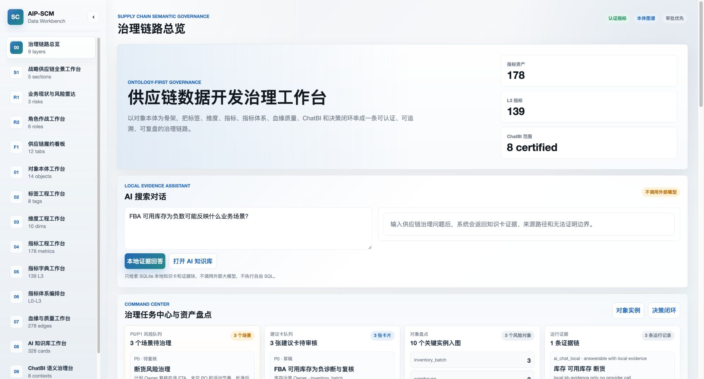
| 下一步 | 目的 |
|---|---|
| 30 个 P0 Owner sign-off + 18 个 P0 字段映射 | 业务 Owner 会签，不能由代码补齐 |
| 接 OMS/WMS/ERP 脱敏样本 | 真实口径校准，避免原型自嗨 |
| 缺货 / 超龄库存 / 尾程成本异常 Action Task | 从看板进入可审批行动系统 |
对外 3 条
把已完成 0→1 的产品，推向真实商业闭环
| 方向 | 当前事实 | 下一断点 | 商业空间 |
|---|---|---|---|
| ABI 商业化闭环 | 70-75%；128 Markdown；688 RAG chunks；260/785 KG；作战台在线；7 skills | 测试店只读→低风险写入→preview→人审→回滚；接真实经营数据；多品牌模板 | 从知识产品进入可验证执行产品 |
| Data Intelligence Hub | 120 后端测试；37 Playwright E2E；生产只读 health；L2/L3/L4 授权分级 | 独立站竞品情报包生产化；Marketplace 授权导入；4-6 小时巡检压成 30-60 分钟复核 | 公司级外部市场情报资产 |
| VOA 全域洞察工作台 | 60-70%；五类 Voice→Opportunity→Evidence→Decision→StoreOps；57 tests；D6 只读巡检 | 真实数据接入；Radar/Launch 后端化；StoreOps L4 授权 | 从建议系统进入受控执行系统 |
Data Intelligence Hub
外部市场情报不是爬虫，是授权、证据链、Dataset 和漂移监控
| 能力 | 解决什么 |
|---|---|
| 授权分级治理 | L2 local/dry-run、L3 production read-only、L4 authorized-live；高风险动作要求确认与幂等 |
| 平台包采集路由 | shopify-independent-ecommerce、github-api-first、public-page-structure-preflight、public-web-rss-docs |
| 独立站商品采集 | URL、价格、库存、变体、分类、图片、canonical URL 从人工抄表变 Dataset |
| Dataset 资产化 | DatasetVersion、CleaningPlan、ExportJob、DriftEvent，让一次性采集变可复用资产 |
| 报告告警闭环 | 数据变了有人知道，知道了有证据可查 |
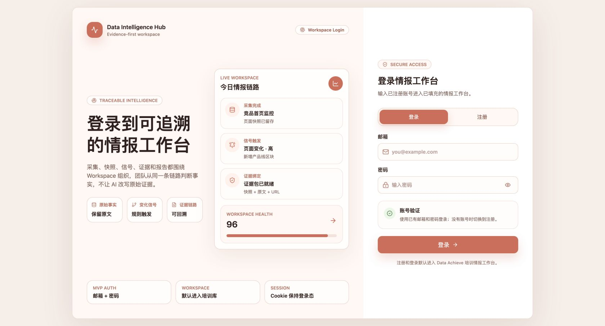
VOA / 市场洞察
从五类 Voice 到 StoreOps：信号、证据、判断、审计、执行、回写
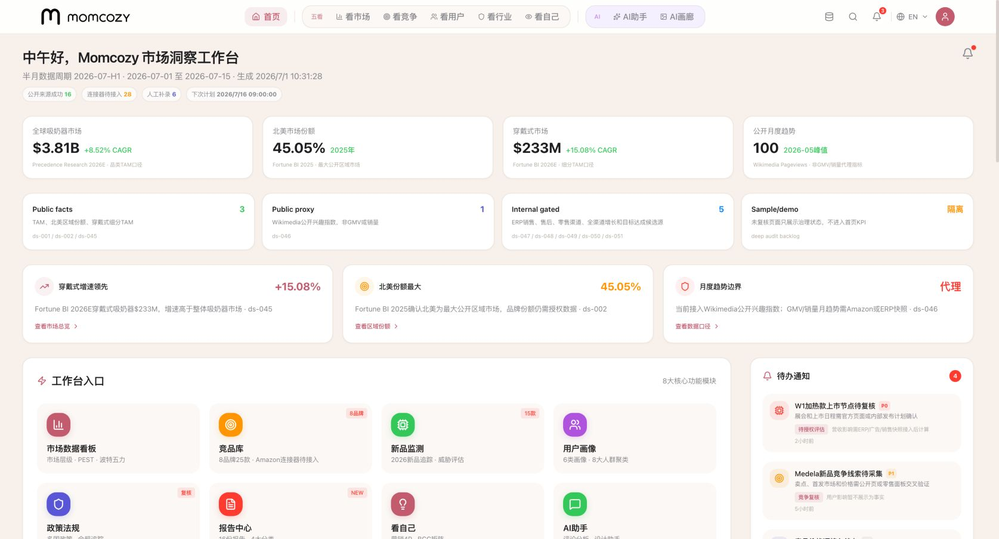
Part 5
权钱责：我需要什么，让数据变钱速度翻倍
不是要资源，是投产比；0→1 已验证，1→10 需要杠杆
资源诉求
每一项投入都对应一个可验证产出
| # | 要什么 | 用在哪个产品 | 为什么必须 | 没有它损失什么 |
|---|---|---|---|---|
| 1 | 爬虫人员 1 人 | data_scrapy 全域数据采集平台 | 采集覆盖从几个源扩展到全渠道，稳定性和时效性翻倍 | 数据采集卡在一个人产能上限 |
| 2 | Codex CLI 部门全员 20× | Agent-kit + codex_evo 自进化开发 | AI 产品开发从我一个人写，变成部门 20 人同时用 AI 写 | 37 个子产品迭代维护困在我一人手里 |
| 3 | Tokens 费用 5 万 | AI_vedio 文生视频 SaaS | AI 视频从 demo 可跑变商业可卖，批量生成产品视频、数字人、营销素材 | 商业化最后一公里跑不通 |
| 4 | 站点权限 + 白牌货盘 + 店铺账号 | ABI 智能化独立站一键开店 | 开店引擎从知识库+推荐升级为直接操作店铺 | 只能建议不能执行，离一键赚钱差权限墙 |
| 5 | AI 产品部署测试专家 | BOS 多智能体系统 | 生产环境 7×24 运行、监控、压测、安全审计 | BOS 停在实验室，到不了业务一线 |
杠杆解释
资源不是成本，是把个人 0→1 放大成组织 1→10
人
爬虫人员 + 部门 Codex CLI 20×，把“我一个人推进”改成“组织同时推进”。
钱
Tokens 费用不是消耗，而是跑出第一个 AI 视频商单前的燃料。
权
站点权限、白牌货盘、店铺账号，把 ABI 从建议系统推进到受控执行系统。
责
部署测试专家承担上线、监控、压测、安全审计责任，让多智能体进入生产。
收束
下一轮述职，不汇报做了多少项目，只汇报数据变成了多少钱
这段时间我交付的不是一堆页面，而是一套方法：先止血，后造血，再把能力机制化。
对 Lute 来说，真正的数字化不是系统多，而是数据能不能流成现金流；真正的 AI 不是模型强，而是能不能替代人做判断、生成动作、沉淀组织能力。
如果这页跟“数据变钱”没有关系，就删掉。我的产品也一样。覆盖索引 1
主附件内容已放入 deck 的位置
| 主附件区块 | 已覆盖页面 | 承载方式 |
|---|---|---|
| 塔尖一句话主张 / 金字塔叙事弧线 | 1, 4, 48 | 主张、目录、收束 |
| Part 1 自我介绍 / 岗位认知 | 1-7 | 学历、职业轨迹、JD 映射、数字化认知 |
| ABI Agent 产品矩阵 | 9-11 | systems 门户截图 + 附件产品矩阵全景图 + 三层 37 子产品压缩矩阵 |
| 年度规划 / Q1 产出 / 部门成果 | 12-13 | 季度专题、5 项 Q1 产出、端到端/直驱一线/长期主义 |
| 支柱一 止血 | 15-19 | 独立站审计、立即行动、组织 CT、DataPilot、三层玻璃结论 |
| 支柱二 VOC | 21-23 | VOC 漏斗、7 方向、BrandOS 旁证 |
| 支柱三 ABI | 25-27 | 能力矩阵、三层场景、完成度和下一断点 |
| 支柱四 机制 | 29-32 | Starlink、Paper2Skills、三层验收、商业化成果 |
| Part 3 业务理解 | 34-37 | L3/L4/L5、四化、代替/替代、双引擎、两条公式 |
| Part 4 后期规划 | 39-44 | 对内 5 条、SCM、对外 ABI/DataHub/VOA |
| Part 5 权钱责 | 46-47 | 5 项资源诉求与杠杆解释 |
截图索引
线上产品截图已本地化为演示资产
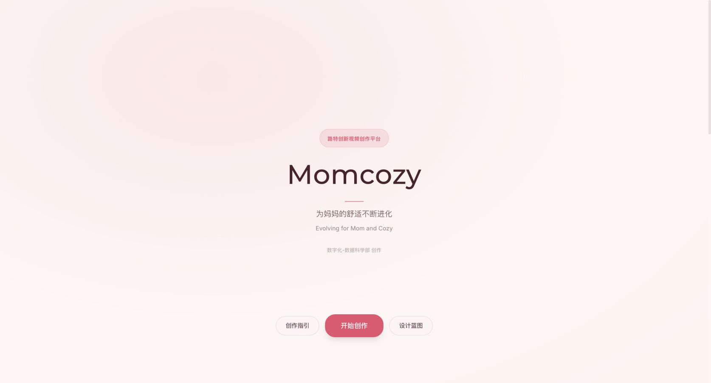
事实边界
事实、推断、不确定项分层，避免把未验证说成已完成
| 类型 | 本 deck 使用方式 | 示例 |
|---|---|---|
| 事实 | 来自主附件、本地项目文档、Chrome 当前截图、产品页面可见内容 | VOC 7,122,904；ABI 128 Markdown/688 chunks；SCM 178 metrics；Starlink 81 skills；截图资产可见 |
| 推断 | 作为立项目标、业务测算或下一阶段目标表达，不能说成已产生 ROI | 上架工时下降 30-50%；SOP 复用率 60-80%；DataHub 巡检压缩为 30-60 分钟复核 |
| 不确定项 | 保留边界，不包装成完成态 | VOC Superset 截图为登录页；DataHub 为登录态；Shopify 测试店真实读写、StoreOps L4、provider call 仍需授权 |
| 生产边界 | 只按文档与截图表达当前状态 | no provider call、production writes false、read-only smoke 与本地验证不是同一证据层 |